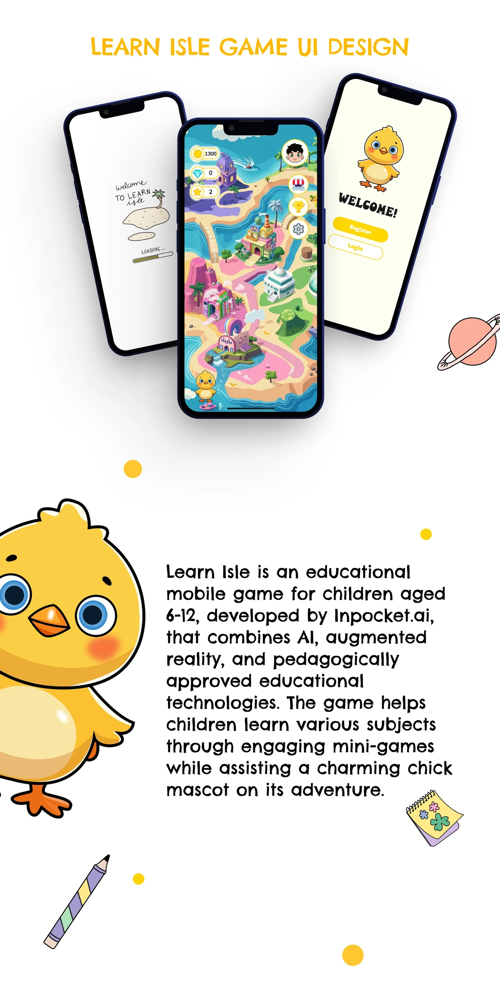
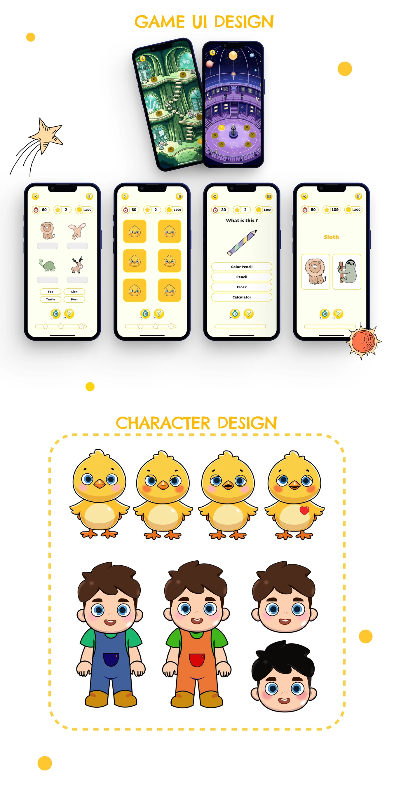
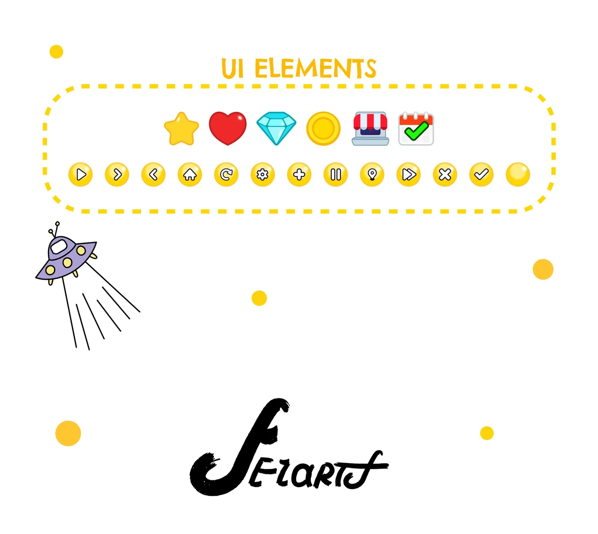

Learn Isle is an educational mobile game for children aged 6-12, developed by Inpocket.ai, that combines AI, augmented reality, and pedagogically approved educational technologies. The game helps children learn various subjects through engaging mini-games while assisting a charming chick mascot on its adventure.


